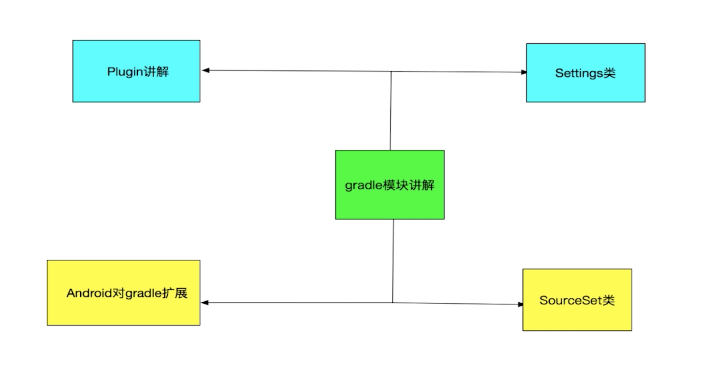
Settings类
决定哪些工程需要被gradle处理，Settings类通过settings.gradle配置文件来初始化
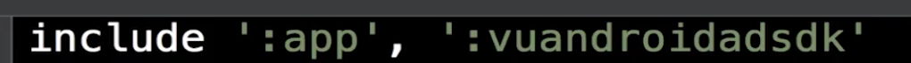
SourceSet类
决定了代码、资源、第三方库要存放的位置。gradle约定大于配置，只要没有做修改，默认按照约定的来，默认从java文件夹下获取代码、从res文件夹下获取资源
修改SO文件位置
sourceSets {
main{
jniLibs.srcDirs = ['libs']
}
}
修改资源文件夹
this.android.sourceSets{
main{
res.srcDirs = ['src/main/res',
'src/main/res-ad',
'src/main/res-player']
}
}
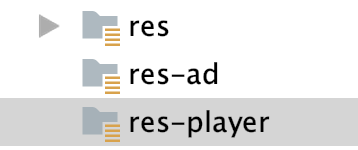
Plugin及自定义Plugin
完成特定任务的所有task都封装在某一个插件中，这样引入这个插件就可以完成特定的功能。
第一种方式直接在build.gradle文件中编写
好处：自动编译，无需执行其他操作。
坏处：生成的插件，对外部是不可见的，只能在当前的功能下使用。
一般来说，不会使用这种方式。
第二种方式创建buildSrc的module
目录如下
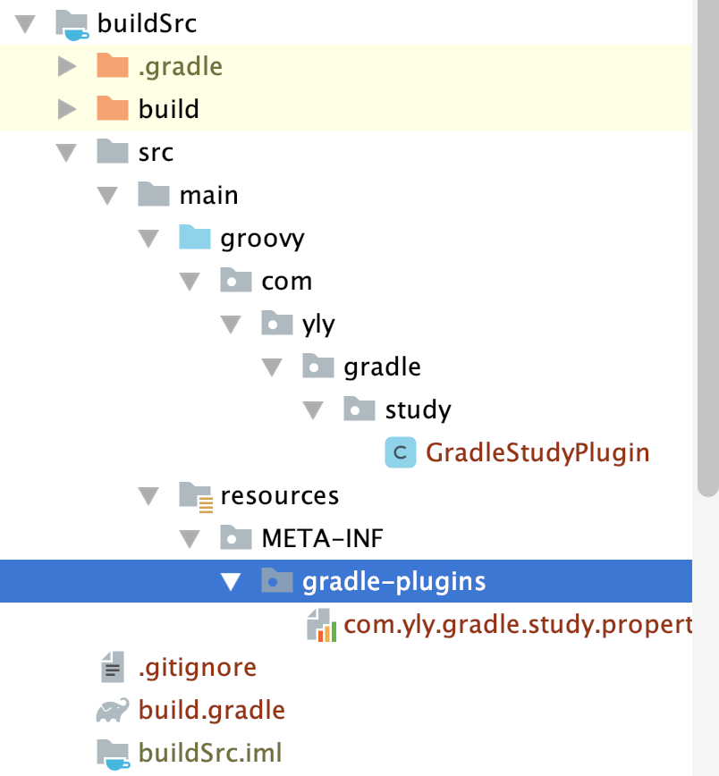
修改build.gradle
//groovy library
apply plugin: 'groovy'
dependencies {
// gradle sdk
implementation gradleApi()
// groovy sdk
implementation localGroovy()
}
sourceSets {
main{
groovy{
srcDir 'src/main/groovy'
}
resources{
srcDir 'src/main/resources'
}
}
}
创建groovy类
/**
* 自定义插件
*/
class GradleStudyPlugin implements Plugin<Project>{
/**
* 插件被引入时要执行的方法
* @param project 引入当前插件的project
*/
@Override
void apply(Project project) {
println 'hello this '+project.name
}
}
创建properties文件
implementation-class=com.yly.gradle.study.GradleStudyPlugin
app moudle引用
apply plugin: 'com.yly.gradle.study'
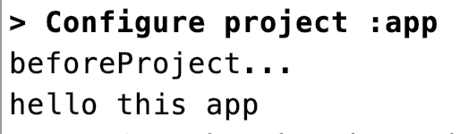
添加实际逻辑
创建属性
/**
* 与自定义PLugin进行参数传递
*/
class ReleaseInfoExtension {
String versionCode
String versionName
String versionInfo
String fileName
ReleaseInfoExtension() {
}
@Override
String toString() {
"""| versionCode = ${versionCode}
| versionName = ${versionName}
| versionInfo = ${versionInfo}
| fileName = ${fileName}
""".stripMargin()
}
}
apply方法中创建扩展属性
project.extensions.create('ylyReleaseInfo',
ReleaseInfoExtension)
app moudle为自定义插件传递参数
ylyReleaseInfo{
versionCode = rootProject.ext.android.versionCode
versionName = rootProject.ext.android.versionName
versionInfo = '第8个版本。。。'
fileName = 'releases.xml'
}
创建自定义Task
/**
* 自定义Task,实现维护版本信息功能
*/
class ReleaseInfoTask extends DefaultTask{
ReleaseInfoTask() {
group = 'yly'
description = 'update the release info'
}
/**
* 执行于gradle执行阶段的代码
* TaskAction注解的方法执行于执行阶段，doFirst为它之前，doLast为它之后
*/
@TaskAction
void doAction() {
updateInfo()
}
//真正的将Extension类中的信息呢，写入指定文件中
private void updateInfo() {
//获取将要写入的信息
String versionCodeMsg = project.extensions.
ylyReleaseInfo.versionCode
String versionNameMsg = project.extensions.
ylyReleaseInfo.versionName
String versionInfoMsg = project.extensions.
ylyReleaseInfo.versionInfo
String fileName = project.extensions.
ylyReleaseInfo.fileName
def file = project.file(fileName)
//将实体对象写入到xml文件中
def sw = new StringWriter()
def xmlBuilder = new MarkupBuilder(sw)
if (file.text != null && file.text.size() <= 0) {
//没有内容
xmlBuilder.releases {
release {
versionCode(versionCodeMsg)
versionName(versionNameMsg)
versionInfo(versionInfoMsg)
}
}
//直接写入
file.withWriter { writer -> writer.append(sw.toString())
}
} else {
//已有其它版本内容
xmlBuilder.release {
versionCode(versionCodeMsg)
versionName(versionNameMsg)
versionInfo(versionInfoMsg)
}
//插入到最后一行前面
def lines = file.readLines()
def lengths = lines.size() - 1
file.withWriter { writer ->
lines.eachWithIndex { line, index ->
if (index != lengths) {
writer.append(line + '\r\n')
} else if (index == lengths) {
writer.append('\r\r\n' + sw.toString() + '\r\n')
writer.append(lines.get(lengths))
}
}
}
}
}
}
apply方法中创建Task
project.tasks.create('ylyReleaseInfoTask',
ReleaseInfoTask)
执行task
./gradlew ylyReleaseInfoTask
缺点：只对当前工程可用
第三种方式Standalone project
优点：插件的module名字，可以随意。这种方式，就是将我们写的一些插件，任务等等打包到一起，生成jar，通过jar包的方式使用。所以， 在其他的项目也是可以使用的
Android及Java插件对gradle的扩展
Android扩展
Android可以配置的属性（为每个变体配置）
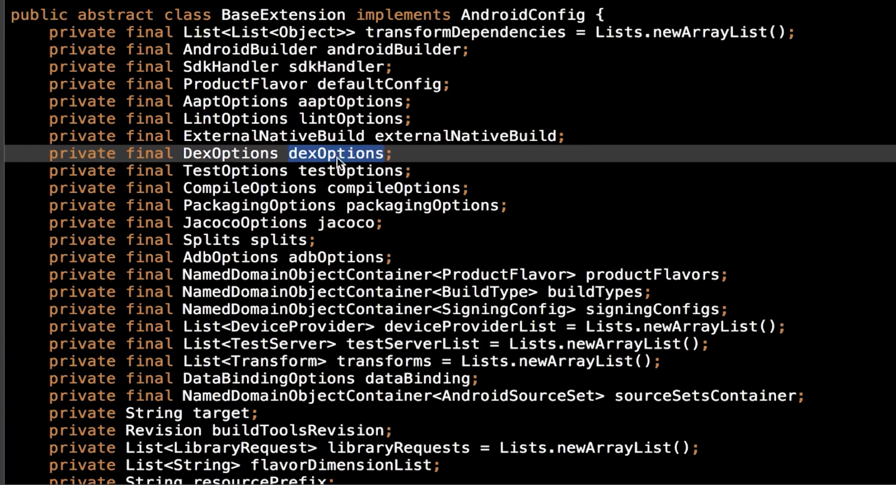
Android引入的task，在每个变体中获取相应的task
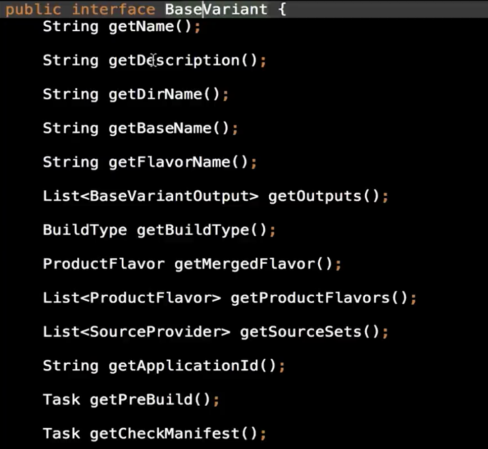
this.afterEvaluate {
//获取所有变体并遍历
this.android.applicationVariants.all { variant->
def name = variant.name
def baseName = variant.baseName
println "name is ${name},baseName is ${baseName}"
}
}
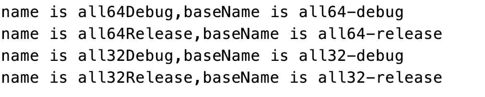
改变输出apk名称，修改变体中的属性
this.afterEvaluate {
//获取所有变体并遍历
this.android.applicationVariants.all { variant->
def output = variant.outputs.first()
def apkName = "app-${variant.baseName}" +
"-${variant.versionName}.apk"
output.outputFileName = apkName
println output.outputFileName
}
}
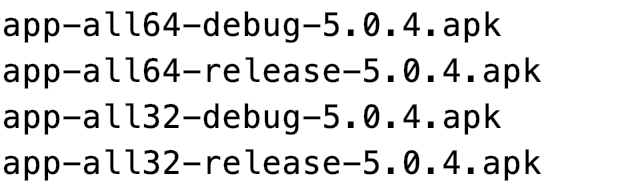
获取变体中的task，后续可以进行操作
this.afterEvaluate {
//获取所有变体并遍历
this.android.applicationVariants.all { variant->
//修改变体中的task
def task = variant.checkManifest
println task.name
}
}
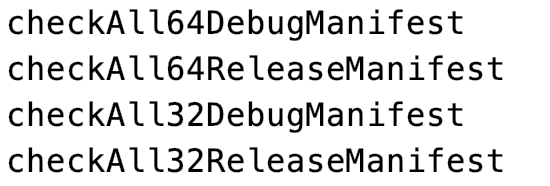
实际案例，壳工程下载包含的最新子工程
/**
* 创建时间：2017年12月22日 <br>
* 作者：renzhiqiang <br>
* 描述：插件自动更新脚本
* 流程描述： 1、解析插件配置
* 2、请求该配置下的最新版本
* 3、检验本地是否存在相同配置的版本
* 4、ipackage下载插件
* 5、校验下载的文件的合法性
*/
import groovy.json.JsonSlurper
import java.security.MessageDigest
/**
* 入口
*/
this.afterEvaluate {
this.android.applicationVariants.all { variant ->
def checkTask = variant.checkManifest
checkTask.doFirst {
def bt = variant.buildType.name
if (bt.equals('qa') || bt.equals('preview')
|| bt.equals('release')) {
update_plugin(bt)
}
}
}
}
/**
* 1.读取配置文件
* 2.根据配置生成获取插件下载地址的url
* 3.拼接下载地址，插件文件名，插件md5文件名成string
* @param buildType 打包的buildType
*/
def update_plugin(String buildType) {
//使用线上配置
def config = getJsonDataFromNet(rootProject.ext.android.pluginConfigUrl);
println 'plugin config is :' + config + " \ncount=" + config.size()
def pluginUrl = 'http://i.package.imooc.com/api/package/search.json'
int pluginSize = config.size()
for (int i = 0; i < pluginSize; i++) {
def plugin = config[i]
println("1、解析" + plugin.projectname + "的插件配置")
println(plugin.projectname + "插件配置为：" + plugin)
StringBuilder urlRequest = new StringBuilder(pluginUrl)
urlRequest.append('?')
urlRequest.append('project=').append(plugin.projectname).append('&')
urlRequest.append('version=').append(plugin.version).append('&')
if (plugin.type != null) {
urlRequest.append('type=').append(plugin.type)
if (plugin.commit_hash != null) {
urlRequest.append('&')
urlRequest.append('commit_hash=').append(plugin.commit_hash)
} else {
if (plugin.type == 'release') {
//release时必须有commitHash否则直接返回失败
// return false
}
}
} else {
if (buildType.equals('qa')) {
urlRequest.append('type=').append('debug')
if (plugin.commit_hash != null) {
urlRequest.append('&')
urlRequest.append('commit_hash=').append(plugin.commit_hash)
}
} else if (buildType.equals('release')) {
//release时必须有commitHash否则直接返回失败
if (plugin.commit_hash == null) {
// return false
} else {
urlRequest.append('type=').append('release').append('&')
urlRequest.append('commit_hash=').append(plugin.commit_hash)
}
} else if (buildType.equals('preview')) {
//preview时必须有commitHash否则直接返回失败
if (plugin.commit_hash == null) {
// return false
} else {
urlRequest.append('type=').append('preview').append('&')
urlRequest.append('commit_hash=').append(plugin.commit_hash)
}
}
}
def success = askForLatest(urlRequest.toString(), plugin.jar_name, plugin.jar_md5_name)
if (success) {
println '-----------' + plugin.jar_name + ' update successfull-----'
println()
} else {
println '-----------' + plugin.jar_name + ' update failed-----'
println()
throw new IllegalArgumentException(plugin.jar_name + ' update failed !!!!!')
}
}
}
/**
* 获取插件最新版本
* 1、根据版本配置请求ipackage上该插件的所有文件（一个配置会有多个插件文件）
* 2、下载最新一个文件（约定第一个为最新）
* @param url
* @param jarname
* @param jarMd5name
* @return
*/
def askForLatest(String url, String jarname, String jarMd5name) {
println("2、从ipackage请求该配置下的最新版本")
println("请求链接为：" + url)
def pluginList = getJsonDataFromNet(url).result
if (pluginList.size() > 0) {
def latestPlugin = pluginList[0]
println("搜索最新版本成功：" + latestPlugin)
if (isPluginExist(jarname, jarMd5name, latestPlugin.md5)) {
return true;
} else {
def flag = down(latestPlugin.download_url, jarname)
if (flag) {
flag = checkMd5(jarname, latestPlugin.md5)
}
return flag
}
} else {
println("搜索最新版本失败，更新插件失败")
return false
}
}
/**
* 校验本地是否已经存在符合配置的插件
* 1、校验插件文件是否存在
* 2、校验插件md5文件是否存在以及内容是否一致
* 3、1和2同时满足即为符合否则删除该插件的相关文件
* @param jarname
* @param jarMd5name
* @param md5
* @return
*/
def isPluginExist(String jarname, String jarMd5name, String md5) {
println("3、检验本地是否存在相同配置的版本")
println("检验条件：" + "文件名" + jarname + "，md5值" + md5)
String pluginPath = 'src/main/assets/plugins/'
File pluginfile;
File md5file;
String md5content;
FileCollection plugins = files { file(pluginPath).listFiles() }
plugins.each { File file ->
if (file.getName().equals(jarname)) {
pluginfile = file;
}
if (file.getName().equals(jarMd5name)) {
md5file = file;
md5content = getFileContent(file);
}
}
if (pluginfile != null && md5content.equals(md5)) {
println("本地存在相同配置的版本，跳过下载，返回成功")
return true;
}
//本地的不匹配则删除
if (pluginfile != null) {
pluginfile.delete()
}
if (md5file != null) {
md5file.delete()
}
println("本地不存在相同配置的版本")
return false
}
/**
* 下载网络文件
* @param url
* @param jarname
* @return
*/
def down(String url, String jarname) {
println("4、开始ipackage下载")
println("下载url为：" + url)
def file = new File(project.getProjectDir().getAbsolutePath() + "/src/main/assets/plugins/" + jarname)
InputStream is
FileOutputStream fos
try {
def connection = new URL(url).openConnection()
connection.setRequestMethod('GET')
connection.connect()
is = connection.getInputStream()
fos = new FileOutputStream(file)
byte[] b = new byte[1024]
int len = 0
while ((len = is.read(b)) != -1) {
fos.write(b, 0, len)
}
fos.flush()
println("文件下载成功")
return true
} catch (Exception e) {
println("文件下载失败")
println(e.printStackTrace())
return false
} finally {
if (fos != null) {
fos.close()
}
if (is != null) {
is.close()
}
}
}
/**
* 下载成功后校验文件与返回的md5是否匹配
* 不匹配则删除文件
* @param jarname
* @param md5
* @return
*/
def checkMd5(String jarname, String md5) {
println("5、开始校验下载的文件的合法性")
// println("ipackage返回的md5 = " + md5)
String pluginPath = 'src/main/assets/plugins/'
FileCollection plugins = files { file(pluginPath).listFiles() }
plugins.each { File file ->
if (file.getName().equals(jarname)) {
def digest = MessageDigest.getInstance("MD5").digest(file.bytes).encodeHex().toString()
// println("下载后计算的md5 = " + digest)
if (digest.equals(md5)) {
File md5File = new File(pluginPath + file.name + '.md5')
FileCollection collectionss = files(md5File)
collectionss.getFiles().getAt(0).withWriter('UTF-8') { within -> within.append(digest) }
println("md5校验成功")
return true;
} else {
file.delete()
println("md5校验失败，删除已下载文件")
return false;
}
}
}
}
/**
* 获取文件的第一行
* md5文件只有一行
* @param file
* @return
*/
def getFileContent(File file) {
List<String> contents = file.readLines();
if (contents != null && contents.size() > 0) {
return contents.get(0);
}
return "";
}
/**
* 从网络获取json数据
* @param url
* @return
*/
def getJsonDataFromNet(String url) {
//使用接口配置
def connection = new URL(url).openConnection()
connection.setRequestMethod('GET')
connection.connect()
def resp = connection.content.text
def jsonSlurper = new JsonSlurper()
return jsonSlurper.parseText(resp).data
}
//关闭测试相关的task
tasks.whenTaskAdded { task ->
if (task.name.contains('AndroidTest')) {
task.enabled = false
}
}
Java扩展
没有变体的概念
如何迁移到gradle
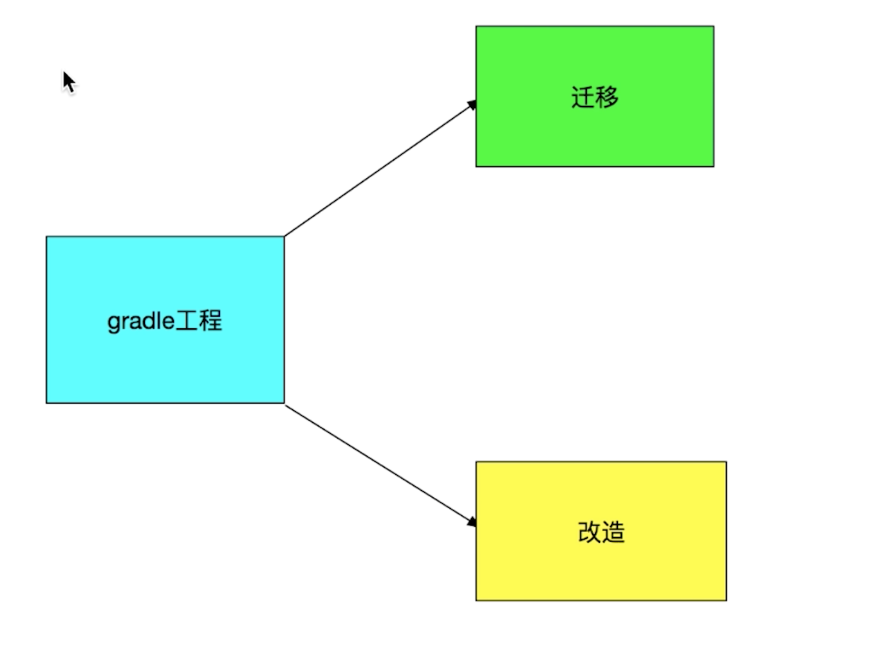
迁移
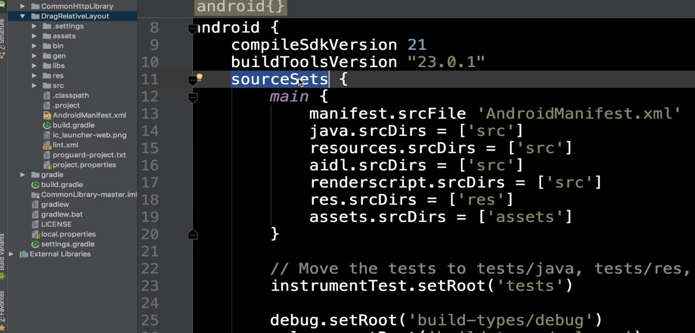
通过创建gradle文件，修改sourceSets
改造
资源文件夹、代码文件夹、构建脚本位置，将这三部分移动到gradle对应的目录下。
新建一个gradle工程，将老工程对应的东西移过来。推荐这种方式。
总结
- Gradle及其生命周期
- Project相关概念及方法
- Task创建，执行及依赖
- Setting、SourceSet等其他模块类讲解
- Android/Java插件对gradle的扩展
- 自定义Plugin讲解及实战